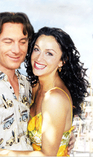

|  | ||
 |
| Interview with David Bakalar |
|
Q: You've been successful at a lot of things, why get into the film business? A: I fell into it. I was trying to master some new computer equipment and I thought the best way to learn about it was to write a screenplay. I had been a sculptor for about the last 17 years. Before that I was president of a company that manufactured transistors and semi-conductors. Q: Were you actively involved as producer? A: Every step of the way. I brought the Jermanok Brothers in to work on the screenplay. We worked on about five drafts of the script; I was there during the shooting, the casting, the editing. I even went to the recording session. Harry Gregson-Williams, who composed the score, said I was the only producer who ever came to his recording session. We recorded at the old Frank Sinatra studio at Capitol Records in Hollywood. Q: How did you come up with the story? A: I'm from Boston and I have a summer home near New Bedford so I know the Portuguese. They're very family and community oriented. So I started to write about that. I did some research but not that much. Q: What about the whole gambling plot? A: I had a relative who was a guitar player in a band in L.A. and he was a card counter. He got into trouble counting cards in a casino and they said to him either come to work for us or else. So I took that part of the story from him and used it for our lead character. Q: Jason Isaacs seems very believable as card counter. A: While we were filming Jason would go online and learn all about card counting, so he added lines when we were filming. He took it to another level. He made it really authentic. What the casinos do now is they use so many decks that you can't keep track. I wouldn't recommend card counting as a career. Q: The film is kind of a love story, coming-of-age story and music movie all in one, how would you describe it? A: It's a film that offers hope. This is a love story about three generations of women. It's a positive story where things work out in the end. Q: Have people compared it to MY BIG FAT GREEK WEDDING? A: Yes, I've heard some of that. But that was a broad Greek comedy, this is a Portuguese love story. Actually someone came up to me at a screening last week and told me it reminded them of MOONSTRUCK, but they liked Passionada better. Naturally I was moonstruck, but enormously flattered. Q: What interested you about the Portuguese community? A: Well, it's a population you never hear much about. There are about 1.2 million in the country and 280,000 Portuguese in Massachusetts. They were originally brought over to fish on the whalers. Many are still fishermen. The women work in the textile mills making beautiful clothes. We could have shot in Canada more cheaply but I thought we'd lose authenticity. Q: How did you find Emmy Rossum to play the daughter? A: We were casting in New York and she wasn't even scheduled. She came in with her mother and did three scenes and we were knocked out by her. When you're casting a character who's 17 usually you use an actress who's in her early twenties and looks younger; Emmy was 14 when we auditioned her, but we didn't know it until after she was cast. She's like a young Audrey Hepburn. Very delicate but strong willed. Q: Sofia Milos seems perfect for the lead, was it difficult to cast that part? A: A lot of 30 year-old actresses didn't want to play a part in which they have a 17 year-old daughter; they thought it would hurt their career. We heard about Sophia, got her to fly in from Italy and we saw her in New York. She was just totally right for the part. She had to go back to L.A. and then flew to New Bedford a few days before we started shooting. Q: Does Charlie fall in love with Celia the first time he sees her singing? A: Initially he just thinks of her as another conquest but after they're in bed together he realizes she's not like the other women he's been with and he falls in love with her, much to the surprise of his friends. But he's gotten himself into a hole with the lies he's told her and now has to find a way out of the trap he's gotten himself into. Q: By the end of the film Celia has opened up for the first time in a very long time, how did you show that change through the music? A: The song she sings at the beginning of the film, "Triste Sina," literally means the sadness in you. She sings the same song at the end but it's more upbeat, happier. It's the same song but you can see the change in her face and the way she sings. She has been forced to deal with her own issues. |